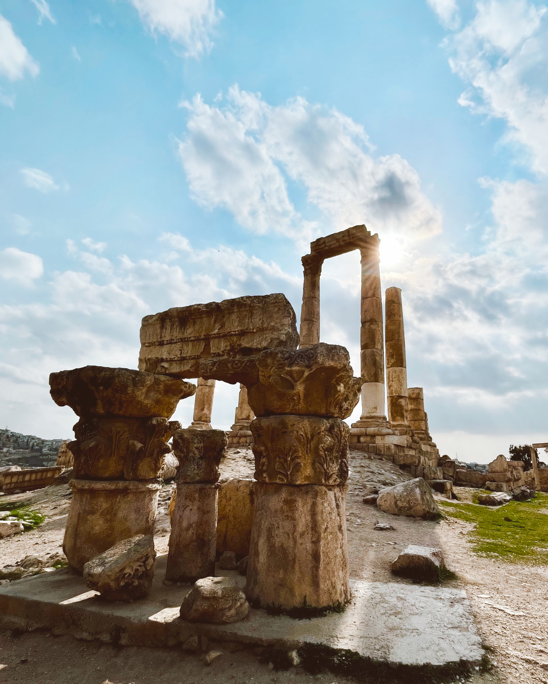

Suomenkielinen opas Jordaniaan - tietoa, vinkkejä ja apua matkan järjestämiseen.
Ihmiset, jotka toivottavat sinut tervetulleeksi kuin vanhan tuttavan ja nähtävyydet, joiden edessä sanat loppuvat. Jordania ei ole vain matkakohde, se on kokemus joka jää.
Petra, Jerash ja lukuisat Raamatun paikat - Jordania on ollut sivilisaatioiden risteyspiste vuosituhansien ajan.
Jordania on yksi Lähi-idän vakaimmista ja turvallisimmista maista. Paikallinen vieraanvaraisuus tekee olosta mukavan heti ensihetkestä.
Aavikko, Kuollutmeri, kanjonit, vihertävät vuoristot ja koralliriutat - yhteen maahan mahtuu enemmän luontoa kuin monet osaisivat arvata.
Mansaf, falafel, hummus ja tuhansien vuosien kauppareittien mausteperintö - jordanialainen ruokakulttuuri on kokemus itsessään.
Aavikkoja, muinaisia kaupungeja, roomalaisia raunioita ja meri jolla kellut ilman vaivaa. Jordanian nähtävyydet ovat erilaisia kuin missään muualla ja niitä on enemmän kuin ehtii nähdä yhdellä matkalla.
Katso kaikki kohteet
Jos matka kiinnostaa ja haluat sen järjestyvän helposti ja sujuvasti, katso luotettavan jordanialaisen matkanjärjestäjän tarjoamat paketit.